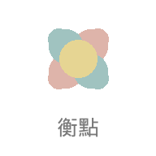

衡點 Dash 安裝教學
3 分鐘完成設定，之後一鍵開啟
1
首次身份綁定
只需做一次，綁定你的 LINE 帳號
💬
點選下方綁定連結
會自動在 LINE 中開啟綁定頁面
📋
填寫資料並送出
依照頁面指示完成資料填寫後，按下送出即可
✅
綁定完成
看到成功提示後即完成，可關閉此頁面
💡
此步驟只需做一次。綁定後系統即可辨識你的身份。
💬
開始綁定
⬇️
2
安裝到手機桌面
iPhone 使用 Safari 操作
🧭
用 Safari 開啟下方連結
請務必使用
Safari
瀏覽器開啟
https://oxencust.github.io/admin-portal/
點擊 Safari 底部的「分享」按鈕
就是底部工具列中間的
方框加箭頭的圖示
➕
選擇「加入主畫面」
在分享選單中往下滑，找到「加入主畫面」後點擊，再按右上角「新增」
🔑
從桌面開啟，選擇「輸入帳號密碼」
首次開啟 App 會看到 LINE 登入畫面，出現兩個選項時，請選擇
「輸入帳號密碼」
登入
⚠️
請勿選擇「使用 LINE 應用程式登入」
選了會跳到 LINE App 導致無法正常返回，造成畫面不斷重複載入。請一定要選「輸入帳號密碼」手動輸入 LINE 的 Email 和密碼。
登入畫面選擇
❌ 使用LINE應用程式登入
✅ 輸入帳號密碼
🎉
完成！之後直接從桌面開啟即可
登入一次後系統會記住你的身份，之後都不用重新登入
💡
如果你還沒設定 LINE 的 Email 和密碼：
打開 LINE → 設定 ⚙️ → 我的帳號 → Email / 密碼
先設定好再回來操作即可。
🧭
用 Safari 開啟衡點 Dash